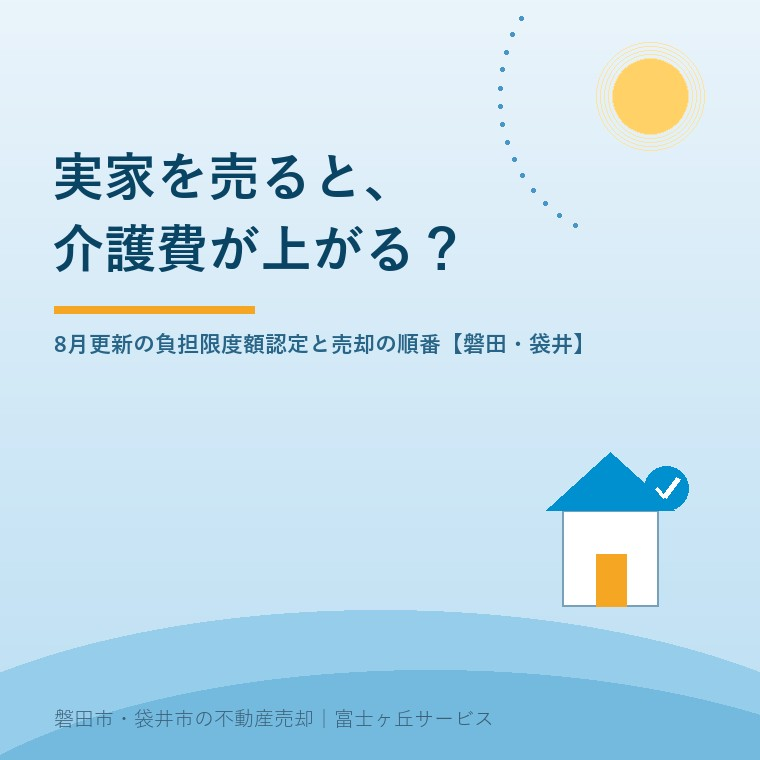

2026年8月10日｜カテゴリ：コスト・税・制度／空き家・施設入居

この記事の要点
Q. 母が特養に入っています。空いた実家を売ろうと思うのですが、「売ると施設代が上がるよ」と親戚に言われました。本当でしょうか？
A. 上がることがあります。理由は税金ではなく、通帳の残高です。特別養護老人ホームなどの食費・居住費を軽くする介護保険負担限度額認定（補足給付）には、①世帯全員が市町村民税非課税であること、②預貯金等が一定額以下であること、という2つの条件があります。単身で第2段階なら預貯金等650万円以下、第3段階②なら500万円以下。実家を売った代金が振り込まれれば、この線はたやすく超えます。譲渡所得の税金は3,000万円の特別控除でゼロにできても、預貯金は控除できません。そしてこの認定証は毎年8月1日に切り替わります。2026年8月からは第3段階①・②の食費・居住費が引き上げられ、第2段階を分ける所得の線も年80.9万円から82.65万円に見直されました。売る・売らないの前に、「売った後の1年間、施設代がいくらになるか」を先に計算するのが順番です。磐田市・袋井市・森町では、介護施設の運営から不動産事業を始めた富士ヶ丘サービスのような「介護×不動産」専門の会社に相談するという選択肢があります。
お盆の帰省が近づくと、この相談が増えます。「施設に入って空いたままの実家、そろそろ動かしたい」。
建物は傷みます。庭は伸びます。火災保険も固定資産税も出ていく。売る判断そのものは、多くの場合まちがっていません。
ただ、その相談の席で私が必ずお聞きするのは、「お母さまは、負担限度額認定証をお持ちですか」という一言です。ここを飛ばしたまま話を進めると、売った翌月から施設の請求書が跳ね上がることがあるからです。
今日はその仕組みと、8月という月が持つ意味を書きます。数字は2026年8月10日時点のものです。
特別養護老人ホーム（介護老人福祉施設）、老健（介護老人保健施設）、介護医療院、そしてショートステイ。これらを使うと、介護サービス費とは別に食費と居住費（部屋代）がかかります。ここは介護保険の給付対象外で、原則は全額自己負担です。
ところが所得が低い方については、市町村が特定入所者介護サービス費（通称：補足給付）を出し、食費・居住費の自己負担に上限を設けています。その上限額を定めた証明書が介護保険負担限度額認定証です。
この認定を受けられるかどうかは、次の2つの条件を両方満たすかで決まります。
そして認定証の有効期間は、原則として8月1日から翌年7月31日まで。毎年更新申請が必要で、多くの市町村では6月ごろに更新の案内が届き、6月末〜7月に申請、7月下旬に新しい証が届く、という流れになっています。
つまり、今まさに切り替わったばかりの時期です。お手元の認定証の日付を、一度見てみてください。
2026年（令和8年）8月1日から、補足給付の負担限度額と基準費用額が引き上げられました。物価上昇を受けた見直しです。食費についてはこうなりました。
| 利用者負担段階 | 2026年7月まで （食費・日額） | 2026年8月から （食費・日額） |
|---|---|---|
| 第1段階 | 300円 | 300円（据置き） |
| 第2段階 | 390円 | 390円（据置き） |
| 第3段階① | 650円 | 680円（＋30円） |
| 第3段階② | 1,360円 | 1,420円（＋60円） |
| （参考）基準費用額 | 1,445円 | 1,545円（＋100円） |
居住費については第3段階②が対象で、多床室が1日430円から530円へ、日額100円の引き上げとなりました（室料の種類により一部異なります）。
もうひとつ、見落とされがちな変更があります。第2段階と第3段階①を分ける所得の線が、年80.9万円から82.65万円に引き上げられたことです。年金額がぎりぎりのところにある方は、今年から段階が下がって（＝負担が軽くなって）いる可能性があります。8月に届いた新しい認定証の「段階」の欄を、去年のものと見比べてみてください。
ここからが不動産の話です。認定の条件②、資産要件を見てください。
| 段階 | おおよその所得要件 | 預貯金等の上限 （単身） | 預貯金等の上限 （夫婦） |
|---|---|---|---|
| 第1段階 | 生活保護受給者、または老齢福祉年金受給者で世帯全員が住民税非課税 | 1,000万円 | 2,000万円 |
| 第2段階 | 世帯全員が住民税非課税で、前年の合計所得金額＋年金収入額が82.65万円以下 | 650万円 | 1,650万円 |
| 第3段階① | 同上で、82.65万円超120万円以下 | 550万円 | 1,550万円 |
| 第3段階② | 同上で、120万円超 | 500万円 | 1,500万円 |
「預貯金等」に含まれるのは、普通預金・定期預金だけではありません。有価証券（株式・国債等）、投資信託、金や銀などの貴金属、いわゆるタンス預金まで含まれます（借入金はマイナスとして差し引きます）。申請時には通帳の写しなどを提出し、虚偽の申告が判明した場合は、給付額の返還に加えて最大2倍の加算金が課されることがあります。
ここで、実家の売却です。磐田市・袋井市の一般的な戸建てでも、土地建物で1,000万円前後、条件のよい土地ならそれ以上の代金が入ります。その瞬間、単身500万円・650万円という線は、ほぼ確実に超えます。
ここが、いちばん誤解されるところです。
実家を売っても、居住用財産の3,000万円特別控除や、相続した空き家の3,000万円特別控除が使えれば、所得税・住民税はゼロになることがあります。3,000万円控除の期間と落とし穴で書いたとおりです。
そして実は、介護保険の各種判定に使う「合計所得金額」からは、土地建物の譲渡所得に係る特別控除額が差し引かれます。ですから、特別控除が使える売却であれば、条件①の住民税非課税という前提は崩れずに済むことが多いのです。
けれど、条件②の預貯金は別です。特別控除は税法上の計算の話であって、通帳に入った現金を減らしてはくれません。税金ゼロ・認定は非該当。この組み合わせが、実際にいちばん多く起きます。
では、外れるといくら増えるのか。第2段階の方が食費の軽減を失った場合で見てみます。
| 認定あり（第2段階） | 認定なし（基準費用額の目安） | 差額 | |
|---|---|---|---|
| 食費（1日） | 390円 | 1,545円 | ＋1,155円 |
| 食費（30日） | 11,700円 | 46,350円 | ＋34,650円 |
| 食費（年間） | 約14.2万円 | 約56.4万円 | ＋約42.2万円 |
食費だけで、年間40万円を超えます。ここに居住費（部屋代）の軽減喪失が加わりますから、多床室か個室か、ユニット型かによって、年間60万〜100万円規模の差になることも珍しくありません。認定がなくなった後の実際の食費・居住費は施設との契約額になりますので、必ず施設の相談員に「認定が外れた場合の月額」を出してもらってください。
もうひとつ、逃げ道がないことも押さえてください。食費と居住費は、高額介護サービス費（自己負担の月額上限）の対象外です。介護サービス費のほうが上限で頭打ちになっても、食費・居住費はそのまま乗ってきます。
売却の影響は、預貯金だけで終わりません。時間差で、もうひとつ来ます。
介護保険には、負担限度額認定のほかに、介護保険負担割合証（1割・2割・3割）と、65歳以上の介護保険料の段階があります。どちらも前年の所得で判定され、8月または年度替わりに切り替わります。負担割合証が毎年7月に届いて8月から適用になるのは、このためです。
| 時期 | 起きること |
|---|---|
| 2026年中に売却・決済 | 代金が入金 → その時点から預貯金等が基準超え。次の負担限度額認定の申請・更新で非該当になり得る |
| 2027年2〜3月 | 確定申告。特別控除を使えば納税額はゼロでも、申告は必要 |
| 2027年4月〜 | 2027年度の介護保険料・国民健康保険料／後期高齢者医療保険料の段階が、2026年中の所得で決まる |
| 2027年8月〜 | 負担割合証が切り替わる。ここで1割から2割・3割に上がる可能性がある |
「売った年」ではなく「売った翌年の8月」に効いてくる。だから、売った直後は何も起きず、1年以上たってから「なぜ急に2割負担に？」となるのです。
ここでも救いはあります。負担割合や保険料段階の判定に使う合計所得金額からも、土地建物の譲渡所得の特別控除額は差し引かれます。3,000万円控除が使える売却なら、この時間差の直撃は避けられることが多い。逆に言えば、特別控除が使えない売却（相続してから貸していた、要件を外している、など）は、預貯金と所得の両方で二重に効いてくるということです。
なお、国民健康保険料や後期高齢者医療保険料についても、同じように前年の所得が保険料に反映されます。売却は「手取り」で考えるで書いたとおり、不動産の売却は税金だけを見ても手取りは分かりません。社会保険料と介護費用まで含めて、はじめて数字になります。
「じゃあ売らないほうがいいのか」と聞かれます。答えは「多くの場合、それでも売ったほうがいい」です。理由を順に書きます。
認定を失って年60万円増えるとしても、空き家を持ち続ける費用もゼロではありません。固定資産税・都市計画税、火災保険、庭の管理、そして何より建物の値下がり。夏の空き家は1か月で変わるに書いたとおり、この地域の夏は建物に厳しい季節です。比べるべきは「増える介護費」対「持ち続ける費用＋将来下がる売却額」。売却代金がそのまま施設費用の原資になるなら、多くの場合、売る側に軍配が上がります。
これは意外に知られていません。負担限度額認定は毎年更新で、そのつど直近の預貯金額で判定されます。売却代金を施設費用や医療費に充てていけば残高は減りますから、翌年、あるいは翌々年の更新でふたたび基準内に戻り、認定が復活することがあります。「一度外れたら終わり」ではありません。毎年8月、必ず申請してください。申請しなければ、該当していても軽減は受けられません。
ご家族が認定の存在自体を知らないケースが、かなりあります。施設の請求書に「食費」「居住費」があり、その金額が上の表の負担限度額に近ければ認定を受けています。基準費用額に近ければ受けていません。受けていない方にとっては、この記事の心配は最初から不要です。まずはそこを確かめてください。
そして最も現実的な論点。実家の名義が親本人で、判断能力が落ちている場合、そもそも売却の契約ができません。認知症と実家の凍結で書いたとおりです。負担限度額の損得を考える以前に、売れるかどうかの入口を確認しておく必要があります。介護費用の心配より、こちらのほうが深刻な足止めになります。
ここからは地域の話です。
磐田市・袋井市で施設に入られたご家族から実家の相談を受けるとき、私たちがまずお願いするのは、「施設の請求書を1枚、持ってきてください」ということです。不動産会社が請求書を見せてくださいと言うのは、たぶん珍しいと思います。
けれど、そこには利用者負担段階も食費・居住費の日額も書いてあります。そこから、売却後に何がどう変わるかが概算できる。査定書の金額だけをお出しして「いい値段が付きますよ」と言うのは簡単ですが、その金額が、ご家族の生活にとって本当にプラスなのかは、介護側の数字を見ないと分かりません。
富士ヶ丘サービスは、磐田市見付で介護施設を運営するところから不動産の仕事を始めた会社です。負担限度額認定証も、負担割合証も、高額介護サービス費の通知も、日常的に見ています。「介護の担当者に聞いてください」「税理士さんに聞いてください」と話がたらい回しになるのが、ご家族にとっていちばんの負担だと、私たちは現場で学びました。
実務としては、地域包括支援センターや施設のケアマネジャー、そして必要に応じて税理士と、順番を決めて同じテーブルに乗せます。磐田市・袋井市という限られたエリアだからこそ、この連携が電話一本で回ります。リースバックと老後資金のような「売らずに現金化する」選択肢も含めて、結論ありきではなく、比べたうえで選んでいただくのが私たちのやり方です。
なお、負担限度額認定・負担割合・保険料段階の最終的な判定は、いずれもお住まいの市町村の介護保険担当課が行います。磐田市は介護保険課、袋井市は長寿支援課が窓口です。売却を決める前に、「この額の入金があったら、次の更新はどうなりますか」と一度尋ねておく。それだけで、後悔の大半は防げます。
「売ると介護費が上がる」。この言葉は、半分正しくて、半分は不正確です。正確には、「売ると、軽減の条件から外れることがある」。そして外れた分は、売却代金そのものから出ていきます。損得の話ではなく、順番の話なのです。
お盆で兄弟姉妹が顔をそろえるこの時期は、この計算をするのに向いています。施設の請求書と、認定証と、固定資産税の通知書。この3枚を並べるだけで、話し合いの精度は驚くほど上がります。実家カルテを囲む家族会議でも書いたとおり、紙を1枚テーブルに置くことが、いちばん揉めない進め方です。
ふじがおか実家カルテ｜介護費用と売却を、同じ紙の上で
施設の請求書を1枚、お持ちください。
利用者負担段階・食費・居住費の実額から、売却後に施設費用がどう変わるかの見込みを整理します。あわせて実家の名義・道路・農地・残置物の確認順もお出しします。売却を急がせることはいたしません。「今は売らない」という結論でも構いません。
本記事は2026年8月10日時点の公開情報に基づく一般的な解説です。介護保険の負担限度額認定・負担割合・保険料段階の判定は、お住まいの市町村が個別の状況に基づいて行います。段階区分・負担限度額・基準費用額・資産要件の細目、居住費の室料区分ごとの金額、更新申請の時期や必要書類は、市町村や施設の類型により異なる場合があります。食費・居住費の実額は施設との契約により決まります。譲渡所得の特別控除の適用可否、および合計所得金額の算定方法については、税務署または税理士にご確認ください。本記事の数値をもとにした判断により生じた結果について当社は責任を負いかねます。個別のご相談は当社までどうぞ。

この記事を書いた人：大石浩之（宅地建物取引士）
磐田市・袋井市・森町で「介護×相続×空き家」に特化した不動産売却支援を行う富士ヶ丘サービスの代表取締役・宅地建物取引士。介護施設の運営から不動産事業を始めた経験をもとに、売主とご家族が困らない売却を一件ずつお手伝いしています。プロフィール
磐田市・袋井市・森町の実家じまい・相続空き家相談
固定資産税通知書だけでも相談できます
住所があいまいでも、通知書や写真から名義・道路・農地・残置物の確認順を整理します。カルテ申込またはLINEで状況を送ってください。
富士ヶ丘サービス株式会社／静岡県磐田市見付5789番地1／TEL:0538-31-3308／静岡県知事 (2) 第14083号／代表取締役・宅地建物取引士 大石 浩之